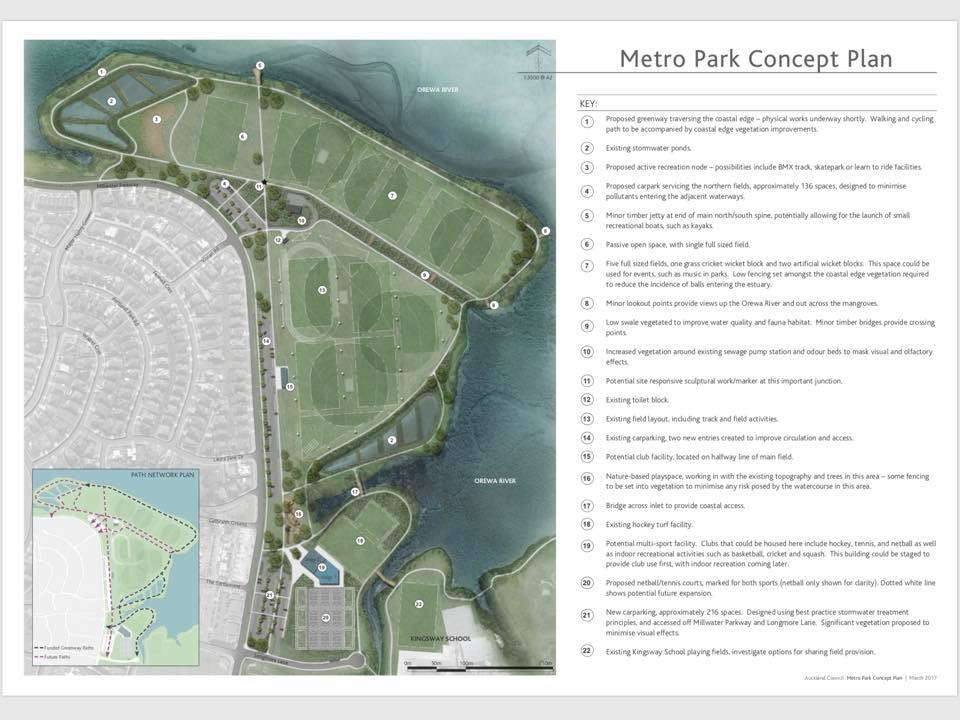

Project overview
Metro Park was planned as a significant sport and recreation space for the Hibiscus Coast, with the ability to support multiple sporting codes, community activity and year-round use. The Trust's work has focused on advocating for practical, shared facilities that serve the needs of local clubs, families, schools and community users.
The project has evolved over time as community needs, sporting demand, site planning and facility options have been tested through feasibility studies, consultation, concept planning and architectural design work.
Metro Park concept plan
The concept planning for Metro Park identifies a broad community sport and recreation precinct, including sports fields, shared paths, parking, public amenities, hardcourt areas, potential club facilities and environmental connections to the Orewa Estuary.

Metro Park Concept Plan showing the broader sports field, circulation, parking, hardcourt, pavilion and recreation planning context.
Project history
A summary of key planning and development milestones.
Reserve planning foundation
The Metro Park East Management Plan supported the development of the reserve for multi-use recreation purposes, with sports fields allocated to a range of clubs and clubroom facilities capable of supporting year-round community use.
Initial sport-user discussions
Discussions began with regional sports organisations and local clubs to identify potential regular users of Metro Park and the strategic role the reserve could play for sport in the area.
Multi-purpose clubroom feasibility study
An independent feasibility study assessed the need for a multi-purpose clubroom at Metro Park East. It considered user needs, building design requirements, an operating model and the feasibility of securing funding for development.
Concept planning refined
Concept planning continued to shape the layout of the park, including sports fields, access, car parking, hardcourt areas, pedestrian links, public amenities and potential shared club facilities.
Updated multi-sport feasibility work
A further feasibility study re-scoped the project and recommended a two-facility approach: a smaller multi-sport clubrooms and toilet building, and a larger indoor multi-sport facility on the southern side of Metro Park.
Pavilion concept design
Architectural concept design work explored the form and function of a pavilion, including changing facilities, externally accessible toilets, storage, a social/community area, tuck shop functionality, meeting space, referee/medical support areas and viewing deck connections to the fields.
Design development and technical progression
The project moved through further design development and technical input, including professional design services and preparation toward consenting and implementation pathways. Commercial details, fees and contract information are intentionally excluded from this public summary.
What the facilities are intended to support
The project has consistently focused on facilities that are practical, shared and community oriented. The planning material identifies the need for core amenities that improve the everyday operation of Metro Park and create a better experience for participants, families and visitors.
Planning principles
The project is guided by principles that have remained consistent across the planning history.
Shared use
Facilities should support multiple sporting codes and wider community use rather than a single exclusive user group.
Sustainable operation
The facility model needs to be practical to operate, affordable to maintain and suitable for long-term community benefit.
Fit-for-purpose design
Planning has favoured functional facilities that directly support sport, recreation, participation and park activation.
Public note
This page summarises the public-facing project history only. Commercially sensitive information, detailed fee information, invoices, private contract terms and internal financial details have not been included.